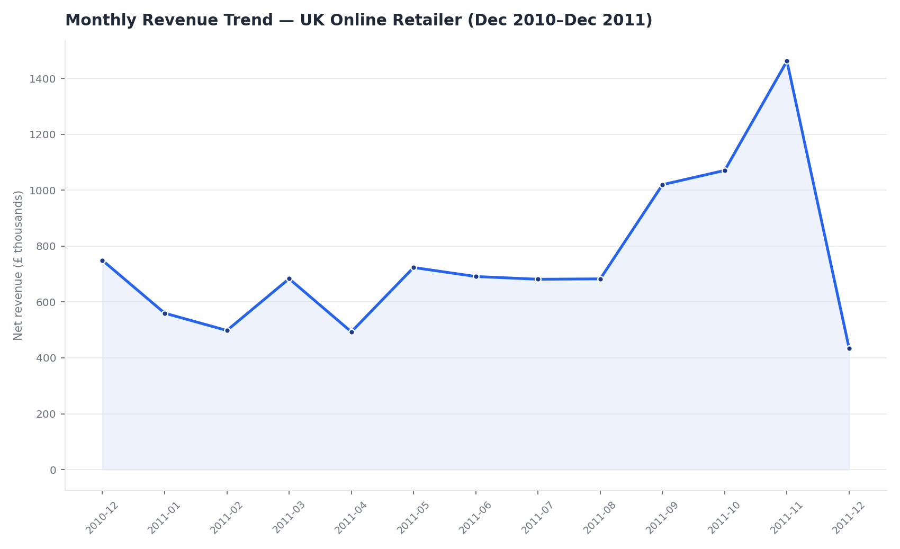

Six SQL queries against a self-normalized relational database built from a flat, 541,909-row UK online retailer transaction file — covering CTEs, window functions (LAG, running SUM), RFM segmentation, and cohort comparison — answering: where the revenue actually comes from, who the best customers are, and where the returns problems are.

Source: UCI Machine Learning Repository, "Online Retail" — real invoice-level transactions from a UK-based online gift retailer, Dec 2010–Dec 2011.
IsCancelled rather than deleted — they're the basis for the returns analysis in Q6.customers(CustomerID PK, Country) · products(StockCode PK, Description) · orders(InvoiceNo PK, CustomerID FK, InvoiceDate, Country, IsCancelled) · order_items(InvoiceNo FK, StockCode FK, Quantity, UnitPrice).
4 indexes on the join/filter columns (orders.CustomerID, order_items.InvoiceNo, order_items.StockCode, orders.InvoiceDate).
-- Q1. Monthly revenue with month-over-month % change.
-- CTE for the monthly rollup, LAG() window function for the
-- prior month's value.
WITH monthly AS (
SELECT
strftime('%Y-%m', o.InvoiceDate) AS month,
ROUND(SUM(oi.Quantity * oi.UnitPrice), 2) AS revenue
FROM orders o
JOIN order_items oi ON oi.InvoiceNo = o.InvoiceNo
GROUP BY month
)
SELECT
month,
revenue,
LAG(revenue) OVER (ORDER BY month) AS prev_month_revenue,
ROUND(100.0 * (revenue - LAG(revenue) OVER (ORDER BY month))
/ LAG(revenue) OVER (ORDER BY month), 1) AS pct_change
FROM monthly
ORDER BY month| month | revenue | prev_month_revenue | pct_change |
|---|---|---|---|
| 2010-12 | 748957.02 | ||
| 2011-01 | 560000.26 | 748957.02 | -25.2 |
| 2011-02 | 498062.65 | 560000.26 | -11.1 |
| 2011-03 | 683267.08 | 498062.65 | 37.2 |
| 2011-04 | 493207.12 | 683267.08 | -27.8 |
| 2011-05 | 723333.51 | 493207.12 | 46.7 |
| 2011-06 | 691123.12 | 723333.51 | -4.5 |
| 2011-07 | 681300.11 | 691123.12 | -1.4 |
| 2011-08 | 682680.51 | 681300.11 | 0.2 |
| 2011-09 | 1019687.62 | 682680.51 | 49.4 |
| 2011-10 | 1070704.67 | 1019687.62 | 5.0 |
| 2011-11 | 1461756.25 | 1070704.67 | 36.5 |
Showing 12 of 13 rows.
-- Q2. Top 10 products by revenue, with running cumulative % of
-- total revenue (a quick Pareto / 80-20 check). Window SUM() OVER
-- an ORDER BY for the running total.
WITH product_rev AS (
SELECT
p.StockCode,
p.Description,
ROUND(SUM(oi.Quantity * oi.UnitPrice), 2) AS revenue
FROM order_items oi
JOIN products p ON p.StockCode = oi.StockCode
-- exclude administrative line items (postage, manual adjustments,
-- bank charges, etc.) that aren't real products -- otherwise they
-- dominate a "top products" list and make it meaningless
WHERE p.StockCode NOT IN ('POST','DOT','M','m','C2','D','S','BANK CHARGES','AMAZONFEE','CRUK')
GROUP BY p.StockCode
),
totals AS (
SELECT SUM(revenue) AS grand_total FROM product_rev
)
SELECT
pr.Description,
pr.revenue,
ROUND(100.0 * SUM(pr.revenue) OVER (ORDER BY pr.revenue DESC) / t.grand_total, 1) AS cumulative_pct_of_total
FROM product_rev pr
CROSS JOIN totals t
ORDER BY pr.revenue DESC
LIMIT 10| Description | revenue | cumulative_pct_of_total |
|---|---|---|
| REGENCY CAKESTAND 3 TIER | 164762.19 | 1.7 |
| PARTY BUNTING | 98302.98 | 2.7 |
| WHITE HANGING HEART T-LIGHT HOLDER | 97894.5 | 3.7 |
| JUMBO BAG RED RETROSPOT | 92356.03 | 4.6 |
| RABBIT NIGHT LIGHT | 66756.59 | 5.3 |
| PAPER CHAIN KIT 50'S CHRISTMAS | 63791.94 | 6.0 |
| ASSORTED COLOUR BIRD ORNAMENT | 58959.73 | 6.6 |
| CHILLI LIGHTS | 53768.06 | 7.1 |
| PICNIC BASKET WICKER SMALL | 51041.37 | 7.6 |
| POPCORN HOLDER | 50987.47 | 8.2 |
-- Q3. Simplified RFM customer segmentation.
-- Recency = days since last order (relative to the dataset's max
-- date, since this is historical data, not live). Frequency =
-- distinct orders. Monetary = total net spend.
-- CTE chain + CASE-based tiering.
WITH cust_orders AS (
SELECT
o.CustomerID,
COUNT(DISTINCT o.InvoiceNo) AS frequency,
SUM(oi.Quantity * oi.UnitPrice) AS monetary,
MAX(o.InvoiceDate) AS last_order
FROM orders o
JOIN order_items oi ON oi.InvoiceNo = o.InvoiceNo
WHERE o.CustomerID IS NOT NULL
GROUP BY o.CustomerID
),
rfm AS (
SELECT
CustomerID,
frequency,
ROUND(monetary, 2) AS monetary,
CAST(julianday((SELECT MAX(InvoiceDate) FROM orders)) - julianday(last_order) AS INT) AS recency_days
FROM cust_orders
)
SELECT
CustomerID,
frequency,
monetary,
recency_days,
CASE
WHEN recency_days <= 30 AND frequency >= 5 THEN 'VIP'
WHEN recency_days <= 90 AND frequency >= 2 THEN 'Active'
WHEN recency_days > 180 THEN 'Lost'
ELSE 'At Risk'
END AS segment
FROM rfm
ORDER BY monetary DESC
LIMIT 15| CustomerID | frequency | monetary | recency_days | segment |
|---|---|---|---|---|
| 14646 | 77 | 279489.02 | 1 | VIP |
| 18102 | 62 | 256438.49 | 0 | VIP |
| 17450 | 55 | 187482.17 | 7 | VIP |
| 14911 | 248 | 132572.62 | 0 | VIP |
| 12415 | 26 | 123725.45 | 23 | VIP |
| 14156 | 66 | 113384.14 | 9 | VIP |
| 17511 | 46 | 88125.38 | 2 | VIP |
| 16684 | 31 | 65892.08 | 3 | VIP |
| 13694 | 60 | 62653.1 | 3 | VIP |
| 15311 | 118 | 59419.34 | 0 | VIP |
| 13089 | 118 | 57385.88 | 2 | VIP |
| 14096 | 34 | 57120.91 | 3 | VIP |
Showing 12 of 15 rows.
-- Q4. Revenue and average order value by country, ranked.
-- 3-way JOIN (orders -> order_items, orders -> customers)
-- + GROUP BY + RANK().
SELECT
o.Country,
COUNT(DISTINCT o.InvoiceNo) AS n_orders,
ROUND(SUM(oi.Quantity * oi.UnitPrice), 2) AS revenue,
ROUND(SUM(oi.Quantity * oi.UnitPrice) * 1.0
/ COUNT(DISTINCT o.InvoiceNo), 2) AS avg_order_value,
RANK() OVER (ORDER BY SUM(oi.Quantity * oi.UnitPrice) DESC) AS revenue_rank
FROM orders o
JOIN order_items oi ON oi.InvoiceNo = o.InvoiceNo
WHERE o.IsCancelled = 0
GROUP BY o.Country
ORDER BY revenue_rank
LIMIT 15| Country | n_orders | revenue | avg_order_value | revenue_rank |
|---|---|---|---|---|
| United Kingdom | 20122 | 9003097.96 | 447.43 | 1 |
| Netherlands | 95 | 285446.34 | 3004.7 | 2 |
| EIRE | 288 | 283453.96 | 984.22 | 3 |
| Germany | 457 | 228867.14 | 500.8 | 4 |
| France | 392 | 209715.11 | 534.99 | 5 |
| Australia | 57 | 138521.31 | 2430.2 | 6 |
| Spain | 90 | 61577.11 | 684.19 | 7 |
| Switzerland | 54 | 57089.9 | 1057.22 | 8 |
| Belgium | 98 | 41196.34 | 420.37 | 9 |
| Sweden | 36 | 38378.33 | 1066.06 | 10 |
| Japan | 19 | 37416.37 | 1969.28 | 11 |
| Norway | 36 | 36165.44 | 1004.6 | 12 |
Showing 12 of 15 rows.
-- Q5. Repeat vs. one-time customers: how many of each, and how
-- much revenue each group is responsible for.
-- Subquery to classify, then aggregate.
WITH cust_freq AS (
SELECT CustomerID, COUNT(DISTINCT InvoiceNo) AS n_orders
FROM orders
WHERE CustomerID IS NOT NULL AND IsCancelled = 0
GROUP BY CustomerID
)
SELECT
CASE WHEN cf.n_orders > 1 THEN 'Repeat customer' ELSE 'One-time customer' END AS customer_type,
COUNT(DISTINCT cf.CustomerID) AS n_customers,
ROUND(SUM(oi.Quantity * oi.UnitPrice), 2) AS total_revenue,
ROUND(SUM(oi.Quantity * oi.UnitPrice) * 1.0 / COUNT(DISTINCT cf.CustomerID), 2) AS avg_revenue_per_customer
FROM cust_freq cf
JOIN orders o ON o.CustomerID = cf.CustomerID AND o.IsCancelled = 0
JOIN order_items oi ON oi.InvoiceNo = o.InvoiceNo
GROUP BY customer_type| customer_type | n_customers | total_revenue | avg_revenue_per_customer |
|---|---|---|---|
| One-time customer | 1494 | 616311.73 | 412.52 |
| Repeat customer | 2845 | 8295096.17 | 2915.68 |
-- Q6. Returns analysis: which products generate the most
-- returned value, and what share of their gross sales does
-- that represent? Two CTEs (gross sales, returns) joined
-- together -- faster and cleaner than a correlated subquery
-- per row, which is what this started as before it got
-- rewritten.
WITH gross AS (
SELECT oi.StockCode, SUM(oi.Quantity * oi.UnitPrice) AS gross_sales
FROM order_items oi
JOIN orders o ON o.InvoiceNo = oi.InvoiceNo
WHERE o.IsCancelled = 0
AND oi.StockCode NOT IN ('POST','DOT','M','m','C2','D','S','BANK CHARGES','AMAZONFEE','CRUK')
GROUP BY oi.StockCode
),
returns AS (
SELECT oi.StockCode, -SUM(oi.Quantity * oi.UnitPrice) AS returned_value
FROM order_items oi
JOIN orders o ON o.InvoiceNo = oi.InvoiceNo
WHERE o.IsCancelled = 1
AND oi.StockCode NOT IN ('POST','DOT','M','m','C2','D','S','BANK CHARGES','AMAZONFEE','CRUK')
GROUP BY oi.StockCode
)
SELECT
p.Description,
ROUND(r.returned_value, 2) AS returned_value,
ROUND(g.gross_sales, 2) AS gross_sales,
ROUND(100.0 * r.returned_value / g.gross_sales, 1) AS pct_of_gross_returned
FROM returns r
JOIN gross g ON g.StockCode = r.StockCode
JOIN products p ON p.StockCode = r.StockCode
WHERE g.gross_sales > 500
ORDER BY r.returned_value DESC
LIMIT 10| Description | returned_value | gross_sales | pct_of_gross_returned |
|---|---|---|---|
| PAPER CRAFT , LITTLE BIRDIE | 168469.6 | 168469.6 | 100.0 |
| MEDIUM CERAMIC TOP STORAGE JAR | 77479.64 | 81700.92 | 94.8 |
| REGENCY CAKESTAND 3 TIER | 9722.55 | 174484.74 | 5.6 |
| WHITE HANGING HEART T-LIGHT HOLDER | 6624.3 | 104518.8 | 6.3 |
| FAIRY CAKE FLANNEL ASSORTED COLOUR | 6591.42 | 18069.28 | 36.5 |
| PANTRY CHOPPING BOARD | 4803.06 | 5868.5 | 81.8 |
| DOORMAT FAIRY CAKE | 4554.9 | 23888.81 | 19.1 |
| GIN + TONIC DIET METAL SIGN | 3775.33 | 27074.07 | 13.9 |
| TEA TIME PARTY BUNTING | 3692.95 | 11290.12 | 32.7 |
| FELTCRAFT DOLL MOLLY | 3512.65 | 12016.34 | 29.2 |